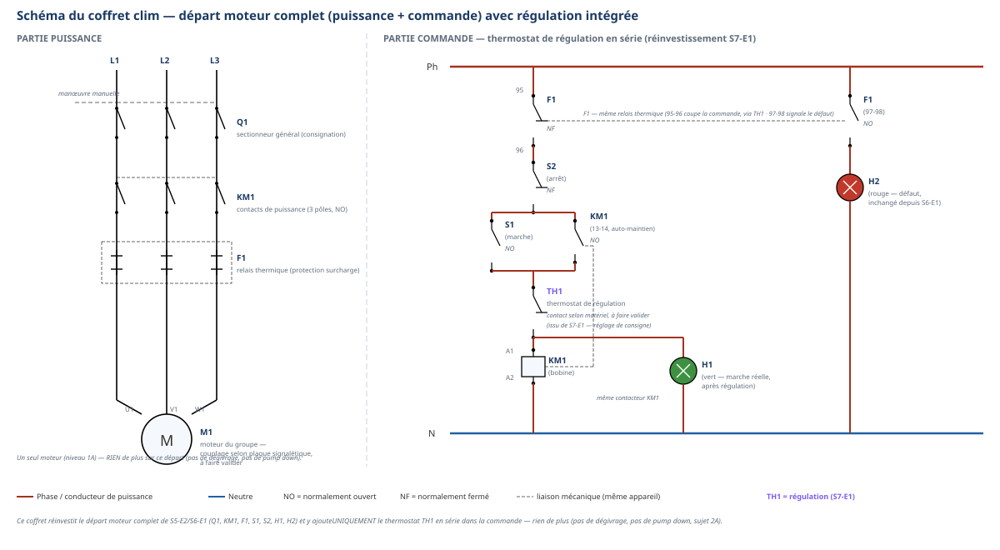

Salle / ZoneAtelier Élec — zone des platines coffret + vestiaire
Durée prévue4 h par passage — une seule demi-journée à chaque fois (semaine 24, puis semaine 25)
ModalitéBinôme organisé — chef d'équipe tournant, rotation à mi-câblage
Encadrement1 professeur, consignation appliquée sans rappel
Tâches
T10 Repérer, raccorder, assembler les réseaux fluidiques, aérauliques et électriques T11 Contrôler les circuits hors fonctionnement T12 Respecter les consignes de sécurité et protéger la zone de travail
Savoirs
S5.6 Réseaux, matériels électriques et de régulation prérequis réactivé (départ moteur complet, S5-E2/S6-E1) — travaillé, augmenté par l'intégration du thermostat de régulation (S7-E1) dans la commande
Savoir-être
Sécurité électrique sans rappel · communication technique du chef d'équipe · exécution fidèle · rigueur du contrôle
Compétences (≤ 4)
C3.6 Confortement → vers Maîtrise Câbler, repérer, connecter les liaisons électriques et électroniques C3.7 Confortement Contrôler la mise en œuvre des équipements électriques et fluidiques
Ce qui change depuis S6 — à annoncer explicitement aux élèves — Le
départ moteur (puissance, auto-maintien, sécurité thermique, voyants) est une reprise stricte de
S5-E2/S6-E1 : rien de nouveau dans ces éléments. Ce qui est réellement nouveau : l'intégration électrique du
thermostat de régulation (réglé en S7-E1) dans la commande, en série entre l'auto-maintien et la bobine ;
et surtout la méthode — travail en binôme organisé avec deux rôles qui tournent, plutôt qu'en autonomie
individuelle. Un seul moteur, le circuit connu + le thermostat — rien de plus : pas de dégivrage, pas de
pump down (2A). Le lien avec É3 se fait via S7-T0 : les élèves encore fragiles sur C3.6 y ont déjà été
repérés.
Passage 1 / Passage 2 — ce qui change (conduite professeur)
Passage 1 (semaine 24) — guidage détaillé, une seule rotation. Le chef d'équipe annonce étape par étape ;
la rotation a lieu une seule fois, à la pause (entre puissance et commande). C'est la première fois que chaque
élève tient le rôle de chef d'équipe : accompagner les binômes en difficulté de communication (voir «
Distribution des rôles »). Passage 2 (semaine 25) — guidage par blocs, deux rotations courtes. Nouveau partenaire si possible. Le
chef d'équipe annonce par blocs plutôt que geste par geste ; deux rotations courtes (après la puissance, puis à
mi-commande) plutôt qu'une seule longue, pour multiplier les occasions de tenir le rôle de contrôle (C3.7).
Ce que ce document ajoute au TP élève
Ce document est le pendant exact du document élève : mêmes jalons, même
méthode. Il y ajoute : le schéma corrigé du coffret (avec repères), la distribution des rôles dans le
binôme, les erreurs typiques et leur remédiation, le minutage recompté, et la différenciation. Aucune
valeur non autorisée n'est donnée : couplage du moteur, calibrage du relais thermique et référence exacte
du thermostat restent « selon le matériel de l'atelier, à faire valider ».
Trame horaire — identique aux deux passages (recomptée ligne à ligne)
Durée
Étape
Contenu
Demi-journée — 4 h 00 (préparation de chantier = 1 h 00)
10 min
1. Débuter la séance
Accueil, appel, rappel de l'organisation (coffret clim et câblage).
10 min
2. Mettre en situation
Ordre d'intervention OI-S7-4 : câbler le coffret complet, lien explicite avec S7-E1 (thermostat).
5 min
3. Présenter les objectifs
Les 5 « je serai capable de… » affichés, lien avec C3.6 (vers Maîtrise) et C3.7 (Confortement).
15 min
4. Vérifier les prérequis
Passage en tenue échelonné ; en attente, mini-quiz de reprise sur les repères Q1/KM1/F1/S1/S2/H1/H2 et la fonction du thermostat. Crochet remédiation : groupe consolidation fléché pour les élèves fragiles à É3 sur C3.6 (issus de S7-T0), tutorat pour les plus solides.
20 min
5. Donner la démarche
Mise en sécurité de la zone (ARU, trousse, gestes interdits) puis présentation de la méthode chef d'équipe tournant et répartition des binômes. Distribution de l'annexe A3 sans repères ; exercice de repérage réalisé et validé avant tout câblage.
55 min
6. Guider l'étude (a) — jalon A
Câblage de la puissance (Q1 → KM1 → F1 → M1), chef d'équipe n°1 / exécutant n°1. Passage 2 : première rotation courte en fin de jalon.
15 min
Pause — rotation des rôles.
70 min
6. Guider l'étude (b) — jalon B
Câblage de la commande avec thermostat TH1 en série (rôles échangés). Passage 2 : seconde rotation courte à mi-commande. Contrôle hors tension complet, mise sous tension et essai par le professeur avec la régulation en action.
15 min
7-8. Synthèse + évaluer et réajuster
Présentation du coffret câblé et des deux rôles tenus, auto-positionnement, validation professeur.
10 min
8 bis. Bon de commande
Carnet de bord + bon de commande hebdomadaire.
10 min
9. Ranger — nettoyer
Platines hors tension, multimètres sur OFF, rangement.
5 min
10. Clôturer la séance
Retour tenue de ville, annonce du passage suivant (ou de S7-T1, semaine 24/25).
Vérification : préparation 1 h 00 + jalon A (55) + pause (15) +
jalon B (70) = 2 h 20 + synthèse/bon de commande/rangement/clôture 40 min = 4 h 00 exactes, identiques
aux deux passages — conforme au plan de séance.
Le schéma légendé complet (puissance ET commande, thermostat compris) figure en
annexe pleine page du document élève sous sa forme sans repères ; la version avec repères,
ci-dessous, sert de référence de correction pour le professeur.

Puissance : Q1 → KM1 → F1 → M1. Commande : F1 (95-96, NF) → S2 (arrêt, NF) → [S1 (marche, NO)
// KM1 13-14 (NO, auto-maintien)] → TH1 (thermostat de régulation, en série) → [bobine KM1 (A1-A2) // H1
(vert, après TH1 — reflète l'état réel du moteur)]. H2 (rouge, défaut) reste sur le circuit séparé F1 (97-98,
NO), inchangé depuis S6-E1.
Point de contrôle
Corrigé
Position de TH1
Après le nœud [S1 // KM1 13-14], avant la bobine. TH1 coupe et rétablit l'alimentation de la bobine selon la température, indépendamment de S1/S2.
Position de H1
Après TH1, en parallèle de la bobine — jamais avant : un H1 câblé avant TH1 resterait allumé même quand le thermostat a coupé le moteur, ce qui est un contresens (H1 doit signaler la marche RÉELLE).
Position de H2
Inchangée depuis S6-E1 : circuit séparé sur F1 (97-98, NO), indépendant de TH1.
Point de vigilance pédagogique — limite assumée du montage — Dans ce
montage simplifié (niveau 1A), l'auto-maintien et la régulation partagent le même contacteur KM1 : après une
coupure par TH1, un redémarrage automatique à la prochaine demande de froid nécessiterait de repasser par S1
(l'auto-maintien de KM1 ne peut pas se rétablir seul). C'est volontairement simplifié : l'objectif du
module est le câblage et le repérage, pas la conception d'un automatisme de cyclage continu — ce point
relève de montages plus avancés (hors 1A, cf. pump down, 2A, explicitement écarté ici).
Distribution des rôles dans le binôme
Le rôle de chef d'équipe est plus exigeant qu'il n'y paraît : il demande de lire
à voix haute, d'anticiper l'étape suivante, et de contrôler sans faire à la place de l'autre.
Deux profils demandent une vigilance particulière :
Profil
Signe observable
Conduite professeur
Chef d'équipe trop silencieux
Pointe du doigt sans verbaliser, laisse l'exécutant deviner.
Interrompre et demander : « Dis à voix haute ce que tu es en train de lire sur le plan » — le silence n'est pas un guidage.
Exécutant qui anticipe sans attendre
Câble l'étape suivante avant que le chef d'équipe ne l'ait annoncée.
Faire arrêter, rappeler que le rôle d'exécutant est d'attendre l'annonce — même si l'étape suivante semble évidente.
Chef d'équipe qui câble « pour montrer »
Prend les outils « juste pour cette fois ».
Rappeler fermement l'interdit : le chef d'équipe ne câble jamais, quelle que soit la difficulté de l'exécutant — le corriger verbalement, pas manuellement.
Binôme qui fonctionne bien
Annonces claires, exécution fidèle, questions posées au bon moment.
Valoriser explicitement — c'est exactement le comportement qui prépare le futur poste de travail en équipe.
Thermostat TH1 hors du circuit de commande (posé sur la platine mais non raccordé, ou câblé en dérivation au lieu d'en série)
C'est l'erreur la plus attendue de ce module : un coffret peut « sembler » fonctionner si on ferme S1 sans que TH1 soit réellement dans la chaîne. Vérifier systématiquement au contrôle hors tension que couper TH1 (manuellement, à froid) ouvre bien le circuit de la bobine. Un moteur qui démarre sans que TH1 soit câblé en série est un défaut de sécurité fonctionnelle, jamais acceptable même si l'essai « marche ».
Auto-maintien oublié ou mal câblé (contact KM1 13-14 absent ou câblé en série au lieu d'en parallèle de S1)
C'est l'erreur qui était déjà travaillée au moment de sa découverte, en S5-E2 — sa réapparition ici signale un besoin de retour au support S5-E2 pour cet élève, pas une nouveauté à réexpliquer entièrement. Poser la question « que se passerait-il si tu relâchais S1 ? » avant de corriger.
Voyant H1 câblé avant TH1 (en parallèle de l'auto-maintien plutôt que de la bobine)
Faire observer que H1 resterait allumé même après une coupure par le thermostat — contraire à sa fonction (signaler la marche réelle). Corriger en repositionnant H1 après TH1.
Rotation des rôles sautée ou bâclée (le même élève reste chef d'équipe toute la séance, ou l'échange se fait sans transmission d'information)
Intervenir dès la pause si la rotation n'a pas eu lieu : c'est un manquement à la méthode du module, pas un détail — reprendre en binôme, en insistant sur la transmission orale du travail déjà repéré.
Exercice de repérage bâclé ou sauté (câblage entamé avant validation de l'annexe A3)
Ne jamais autoriser le câblage tant que l'annexe n'est pas complétée et visée — c'est la condition d'entrée du module, pas une option.
Confusion entre un arrêt par S2 (volontaire) et un arrêt par TH1 (régulation)
Faire verbaliser la différence à l'oral avant de continuer — c'est une question de compréhension du rôle de chaque organe, pas seulement de câblage.
Organisation du plateau
Zone
Fonction / matériel
Points de vigilance
Table de référence
Schéma légendé complet (avec repères), consultable par le chef d'équipe à tout moment.
Rester à distance des postes de câblage : c'est le chef d'équipe qui vient consulter, pas l'exécutant.
Postes binômes
1 platine par binôme, matériel complet du coffret (Q1, KM1, F1, S1, S2, TH1, H1, H2, M1).
Prévoir un thermostat par poste, réglé ou réglable — coordination avec S7-E1 si le matériel est partagé entre les deux modules.
Poste de suivi des rôles
Le professeur note quel élève a tenu quel rôle, pour vérifier que chacun tient les deux dans la séance.
Repérer tôt un binôme où un même élève « prend toujours la main » — intervenir avant la pause plutôt qu'en fin de séance.
Surveillance renforcée
Le professeur reste positionné à proximité de chaque mise sous tension et de chaque essai avec régulation.
Simuler la variation de consigne du thermostat de façon contrôlée (ne jamais laisser un élève manipuler le bulbe ou la sonde pendant l'essai sous tension).
Différenciation
Profil
Adaptation
Consolidation (fléchée, élèves fragiles à É3 sur C3.6)
Le professeur reste au poste pour l'exercice de repérage ; l'élève le plus solide tient le rôle de chef d'équipe en premier, l'élève fragile observe et exécute avant de tenir lui-même le rôle de chef d'équipe sur une portion réduite (uniquement les voyants, par exemple).
Standard
Déroulement tel que décrit dans le document élève, rotation unique (passage 1) ou double (passage 2).
Approfondissement (tutorat)
Après validation de son propre coffret, le binôme explique à un autre binôme la différence entre arrêt S2 et arrêt TH1 ; défi transfert proposé à l'oral (deux zones à réguler), sans câblage supplémentaire.
FLE
La fiche de rôle est reformulée oralement avec des phrases courtes ; les deux rôles sont mimés par le professeur avant la première rotation ; les repères sont montrés du doigt sur le schéma légendé avant d'être nommés.
TDAH / DYS
L'annexe A3 de repérage reste la référence visuelle constante pendant tout le câblage ; les étapes du chef d'équipe sont annoncées une seule à la fois, jamais en bloc, pour cet élève en particulier même en passage 2.
Échelle FrigorX : 0 Non évalué · 1 Non acquis · 2 En cours
d'acquisition · 3 Acquis · 4 Parfaitement maîtrisé. Statuts : C3.6 Confortement → vers Maîtrise ·
C3.7 Confortement — jamais Évaluation dans ce module (l'Évaluation officielle a lieu à É4, semaine 32).
Compétence / savoir-être
0
1
2
3
4
C3.6 Câbler, repérer, connecter les liaisons électriques et électroniques sur T10 · S5.6
Compétence non observée ce jour.
Câblage non conforme, thermostat oublié ou shunté, ou consignation non respectée.
Coffret câblé avec une ou plusieurs erreurs corrigées après contrôle du professeur.
Coffret câblé conforme (puissance, commande, thermostat en série), contrôlé et validé.
Comme « Acquis », et repérage préalable exemplaire (annexe complétée sans erreur avant câblage).
C3.7 Contrôler la mise en œuvre des équipements électriques et fluidiques rôle de chef d'équipe
Compétence non observée ce jour.
N'annonce pas les étapes, ou câble à la place de l'exécutant, ou ne relève aucune erreur.
Guide et contrôle avec l'aide du professeur pour relancer les annonces.
Guide clairement, contrôle chaque étape avant de passer à la suivante, sans câbler à la place de l'exécutant.
Comme « Acquis », et adapte son guidage (plus concis, par blocs) au niveau de l'exécutant.
Savoir-être — sécurité, communication, rigueur du contrôle
Non observé ce jour.
Geste dangereux, ou communication confuse qui met en danger la logique du câblage.
Sécurité respectée, communication fonctionnelle mais peu claire.
Sécurité sans rappel, communication claire et posée dans les deux rôles.
Comme « Acquis », et aide un autre binôme en difficulté sans câbler à sa place.
Point de vigilance correction — un coffret câblé « parfaitement » par un
binôme où un seul élève a réellement tenu le rôle de chef d'équipe (rotation non respectée) doit être noté en
C3.7 comme non tenu pour l'élève resté passif, indépendamment de la qualité du câblage final.
Lien avec la suite de la séquence
Le coffret câblé ici, avec sa régulation en action, alimente directement S7-T1
(lecture de relevés, semaine 24) : les relevés de pression et de température pris en F1/F2 prennent tout leur
sens une fois que les élèves ont vu, en E2, qu'un thermostat pilote réellement l'arrêt et la remise en marche
du groupe. Aucune évaluation propre n'a lieu dans S7 : la compétence C3.6 (vers Maîtrise) et C3.7
(Confortement) seront officiellement positionnées à É4 (semaine 32, rangée en S9).
Croisements interdisciplinaires
Prévention des risques électriques — consignation, NF C 18-510, pièces tournantes ;
Technologie — départ moteur, régulation par thermostat, intégration commande (S5.6) ;
Co-intervention français — fiche de rôle, communication technique orale (chef d'équipe) ;
Préparation du regard du diagnostiqueur — S7-T1, S9.
D'après : « TP câblage
puissance/commande avec repérage » de l'enseignant, 2025-2026 (démarche de lecture/colorisation des réseaux,
repérage et numérotation des bornes — barre du haut de référence, restituée en feuille 3 du document élève) ;
« Plan de séance », « Document élève - TP » et « Document professeur - corrigé », S5-E2 · Schémas de commande
industriels et S6-E1 · Contacteurs et moteurs, F. Henninot (départ moteur complet réinvesti à l'identique : Q1,
KM1, F1, S1, S2, H1, H2, grille 0-4 de référence) ; documents S7-E1 · Régulations simples — premier réglage
(thermostat de régulation, réinvesti dans son intégration électrique). Schémas composés dans images/
de S7 (bibliothèque de symboles inerWeb) : schema-coffret-clim.svg et sa variante
--sans-reperes.svg. Aucune valeur non autorisée : couplage moteur, calibrage du relais thermique et
référence exacte du thermostat restent « selon le matériel de l'atelier, à faire valider ».